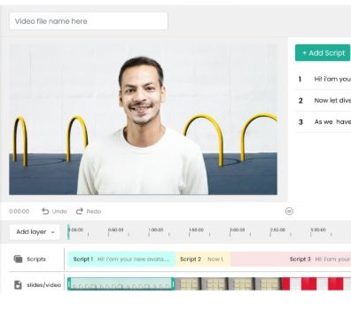
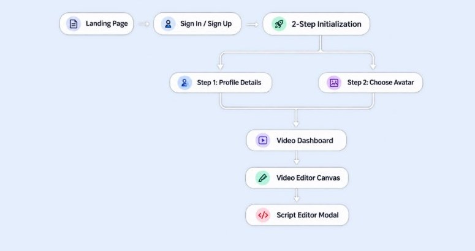
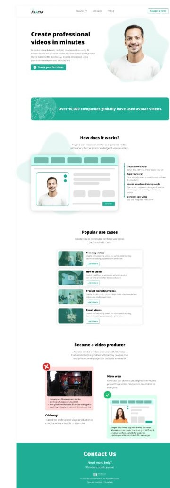
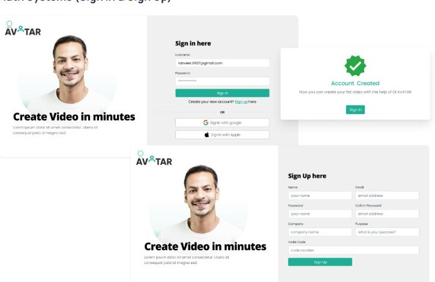
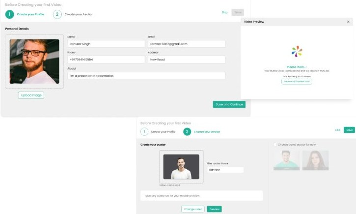
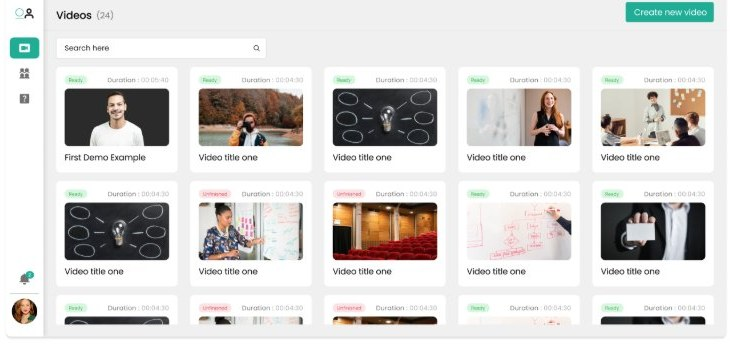
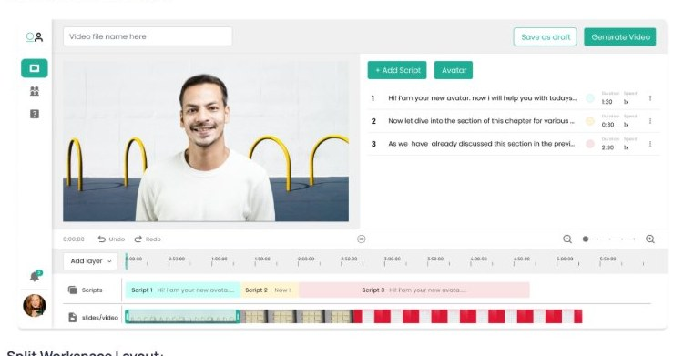
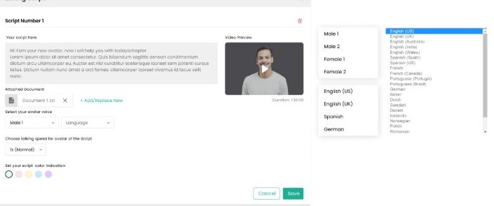

Create professional videos in minutes
OI Avatar is a web based platform to create videos using AI avatars in minutes. You can create your own avatar and type any text to make it a life like video. Ai avatars can reduce video production time spent and effort by 80%.

The Problem
Traditional video production is expensive, complex, and time-consuming. Creating corporate videos requires studio setups, hiring actors, expensive camera gear, and complex timeline editing software. This limits non-video professionals from producing timely content.
Objectives
OI Avatar turns text into AI avatar video presentations. Users can set up a personal AI avatar in minutes, input text scripts, organize multi-scene timelines, and render studio-quality videos without any video editing experience.
Research & Discovery
Target Audience
- Corporate Trainers & L&D Teams: Creating onboarding, compliance, and training modules.
- Product Marketers & Sales Teams: Building product demos, video walk-throughs, and campaign reels.
- Educators & Content Creators: Crafting multi-lingual “how-to” guides and instructional videos.
Key Research Insights
- Old Way vs New Way Approach: Replacing studio overhead (hiring actors, editing skills, camera gear) with an affordable, web-based app featuring diverse AI avatar choices.
- Frictionless Onboarding: Directing users through a quick 2-step setup wizard before entering the editor.
- Layer-Based Timeline Editor: Providing familiar video-editor mechanics (timeline tracks, script blocks, slide assets) simplified for text-first creators.
Architecture & User Journey Map

UI Design System
Color Palette
Primary Brand: conveys trust, innovation, and modern tech.
Neutral Dark: for high-contrast headlines and secondary actions.
Neutral Light: provides clean card containers and subtle form backgrounds.
Typography & Layout:
- Clean sans-serif system font (Inter / Jakarta Sans style) optimized for dashboard readability, input labels, and code/script previews.
- Side navigation bar layout with iconography for rapid view switching (Home, Videos, Team/Avatars, Settings).
Detailed Screen Breakdown & Experience Analysis
Marketing Landing Page

Hero Banner: Features bold primary messaging “Create professional videos in minutes” alongside a quick CTA button “Create your first video”.
Social Proof & Stats: Highlights trust with social proof banners (“Over 10,000 companies globally have used avatar videos”).
How it Works (4 Steps):
- Choose your Avatar
- Type your script
- Upload visuals and backgrounds
- Generate your video
Popular Use Cases Grid: Direct cards for Training videos, How-to videos, Product marketing videos, and Recruit videos.
Comparison Matrix: Visual contrast comparing Old Way (costly studio, camera gear, time-consuming) vs. New Way (simple web app, affordable, intuitive interface, 60+ languages).
Auth Systems (Sign In & Sign Up)

Split Layout: High-energy visual brand panel on the left paired with a clean, low-friction form container on the right.
Sign In: Supports standard username/password credentials alongside single-click OAuth options (Sign in with Google, Sign in with Apple).
Sign Up: Captures relevant business data upfront (Name, Email, Password, Company, Purpose, Invite Code) to personalize the user’s workspace upon entering.
Onboarding & Avatar Initialization Wizard

Progress Indicator: Clear 2-step stepper (1. Create your Profile 2. Choose your Avatar) with Skip and Save utility buttons.
Step 1 (Personal Details): Enables image upload, contact info, and an “About” text field (e.g., “I’m a presenter at toastmaster”) to contextually adjust AI defaults.
Step 2 (Choose Avatar): Lets users record/upload a custom talking video or pick from stock demo avatars (John, Lili). Includes a live preview test field to type sample sentences before saving.
Video Library Dashboard

Workspace Stats: Shows total video count (Videos 24) with a prominent top-right call-to-action: + Create new video.
Search & Filters: Top search input to quickly filter projects by name.
Grid Cards: Displays video thumbnails with status badges (Ready in green, Unfinished in pink), project title, and exact duration indicators.
Video Editor Canvas

Split Workspace Layout:
- Left Window: Real-time canvas preview showing the selected AI avatar integrated over background visuals.
- Right Panel: Sequential script manager (+ Add Script, Avatar tab) displaying script blocks, scene durations, and playback speeds.
Bottom Multi-Track Timeline: Features time-coded rulers, Add layer controls, distinct Scripts track (color-coded blocks), and Slides/Video track for visual syncing.
Top Actions: Quick draft saving (Save as draft) and final rendering (Generate Video).
Script Modal Editor

Focused Writing Space: Popup modal allowing detailed script edits without losing context of the timeline.
Document Attachment: Option to upload context files (Document 1.txt) to auto-generate or support avatar speech.
Voice & Persona Controls: Selectable avatar voice models (Male 1), accent/language dropdowns, and speech rate selectors (1x Normal).
Color Tagging System: Color picker for script indication tags (green, pink, yellow, blue, purple) matching timeline track colors.
UX Impact & Takeaways
- Reduced Cognitive Load: Breaking down a complex video editing engine into structured script blocks and a 2-step setup process makes professional video creation accessible to non-technical users.
- Clear Feedback Loops: Real-time script preview modals, color-coded timeline tracks, and status indicators (Ready vs Unfinished) ensure users maintain full visibility of their video build process.